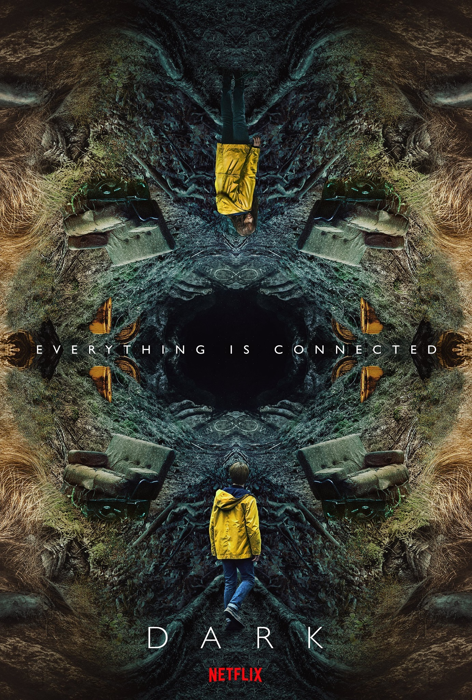

ALİ RIZA ALP
Hakkimda
Merhaba,ben Ali,Kodlama üzerine çalışmalar yürütüyorum,javascript kütüphanesi olan react alanında ağırlıklı çalışmalarım oluyor.
İLGİ ALANLARIM
1.Film
2.Dizi
3.kitap
Sevdiğim Diziler
Dark
Dark, Baran bo Odar ve Jantje Friese tarafından yaratılan bilimkurgu ve gerilim türündeki Alman İnternet dizisi. Almanca olan ilk Netflix orijinal dizisidir ve 1 Aralık 2017'de yayınlanmaya başlamıştır.
Dizi daha çok paralel evreni konu alıyor.
